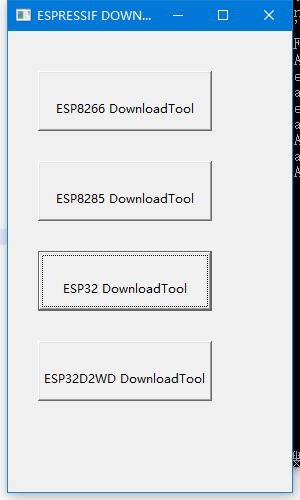
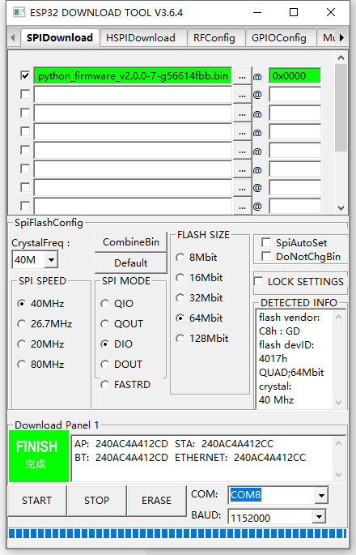

烧录固件¶
选择 ESP32 DownloadTool
选择 SPIDownload ，然后浏览并选中刚下载的掌控板固件mpython_v2.0.0.bin，并设置地址是0x00。 将CrystallFreq设为40M，SPI SPEED 设为40MHz，SPI MODE设为DIO，FLASH SIZE改为64MBit，串口号设置为实际串口，波特率1152000。
警告
- v1.1.1以后的固件版本,firmware烧录起始地址改为0x00!
- v1.5.0以后的固件版本,集成Noto字库!v1.5.0以前固件或者需要重刷字库的,可以在Flash Tool上选中字库Noto_Sans_CJK_SC_Light16.xbf，并设置0x400000烧录,方法同固件烧录方法一样。
点击START，此时掌控板将进入Download模式。固件下载中，如下图。
提示
掌控板硬件版本v1.0.1前的,须要同时按下a，b键持续2秒后松开,手动进入Download模式
下载完成后，如下图。
